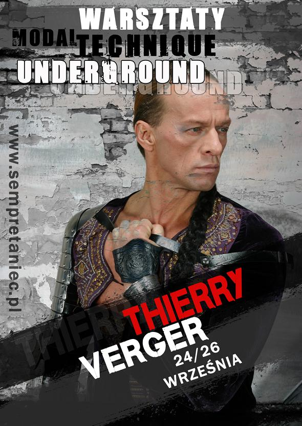

Thierry Verger urodzi³ siê w Oumca w Nowej Kaledonii.
Od 1981 r. mieszka w Pary¿u, gdzie pracuje w najs³ynniejszych szko³ach: Studio Harmonic, Le Centre International Danse Jazz i Le Centra des Arts Vivants.
Prowadzi warsztaty w wielu krajach na ca³ym ¶wiecie (Izrael, Japonia, Wêgry, Holandia, Szwajcaria).
Jest za³o¿ycielem Ballet DANCE & Co. i autorem licznych spektakli, m. in.: "Mouvement de sable", "Sphinx", "La caravane", "Veloce" i wielu innych.
W Polsce przygotowa³ spektakle "Drab-Zeen" oraz "Prophetie" dla Kieleckiego Teatru Tañca oraz "Lato - Red Sun" dla Polskiego Teatru Tañca w Poznaniu.
By³ tak¿e autorem oryginalnych i nowatorskich choreografii w polskiej edycji programu "You Can Dance".
W stworzonej przez siebie Technique Modal Underground ³±czy tañce Bliskiego Wschodu, elementy sztuk walki i style tañca modern, uzyskuj±c wrêcz magiczne efekty.
Jego perfekcyjny warsztat, nietypowe rozwi±zania choreograficzne i precyzja ruchu przykuwaj± uwagê i budz± podziw.
My¶l± przewodni± lekcji Thierry'ego jest przekazanie najistotniejszych aspektów technicznych tañca, przy jednoczesnym rozwijaniu osobowo¶ci ka¿dego tancerza i uwalnieniu go od wszelkich ograniczeñ.
Technique Modal Underground, wedlug definicji autora, to nie tylko technika tañca, ale przede wszystkim sposob ¿ycia i my¶lenia, gdzie ka¿dy jest wyj±tkowy i mo¿e wyraziæ swoj± niepowtarzaln± osobowo¶æ.
Jest to autorska technika tañca, której istot± jest dzielenie siê sob±.
Spotkanie z Thierry'm to lekcja jakiej nigdy nie do¶wiadczyli¶cie... ,